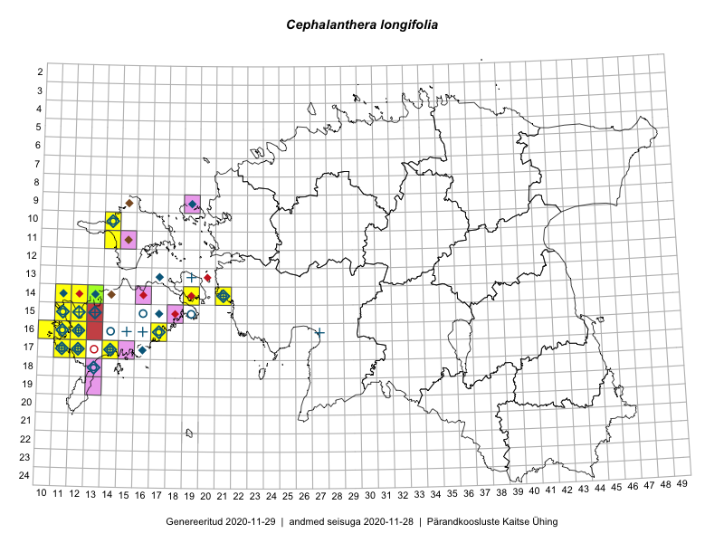

Cephalanthera longifolia
Uuendatud: 2016-12-02
Kaardile koondatud taksonid: Cephalanthera longifolia (L.) Fritsch

Kaart põhineb 37 vaatlusel. Taksonit on leitud 11 ruudust.
Kuvatud viited 20 esimesele andmebaasikirjele, ülejäänud PlutoFis
- Toomas Kukk, Mari Reitalu: 2014-06-20: 16-12: ala
- Toomas Kukk, Mari Reitalu: 2014-06-20: 16-12: GPS punkt
- Mari Reitalu: 2014-05-18: 15-11: ala
- Mari Reitalu: 2014-08-31: 17-12: ala
- Mari Reitalu: 2015-09-10: 17-12: ala
- Mari Reitalu: 2015-09-10: 17-12: GPS punkt
- Mari Reitalu: 2015-06-10: 16-12: GPS punkt
- Mari Reitalu, Oliver Parrest: 2015-07-14: 14-11: ala
- Mari Reitalu, Oliver Parrest: 2015-07-21: 15-12: ala
- Mari Reitalu, Oliver Parrest: 2015-07-21: 14-12: ala
- Mari Reitalu, Triin Reitalu: 2015-07-22: 17-12: ala
- Mari Reitalu, Triin Reitalu: 2015-05-24: 14-11: ala
- Mari Reitalu, Oliver Parrest: 2015-07-16: 15-11: ala
- Mari Reitalu, Triin Reitalu: 2015-06-24: 17-11: ala
- Mari Reitalu, Oliver Parrest: 2015-07-21: 14-12: GPS punkt
- Mari Reitalu, Oliver Parrest: 2015-06-21: 15-12: GPS punkt
- Mari Reitalu, Oliver Parrest: 2015-07-14: 14-11: GPS punkt
- Mari Reitalu, Oliver Parrest: 2015-07-16: 15-11: GPS punkt
- Triin Reitalu, Mari Reitalu: 2015-06-24: 17-11: GPS punkt
- Triin Reitalu, Mari Reitalu: 2015-05-28: 16-11: GPS punkt